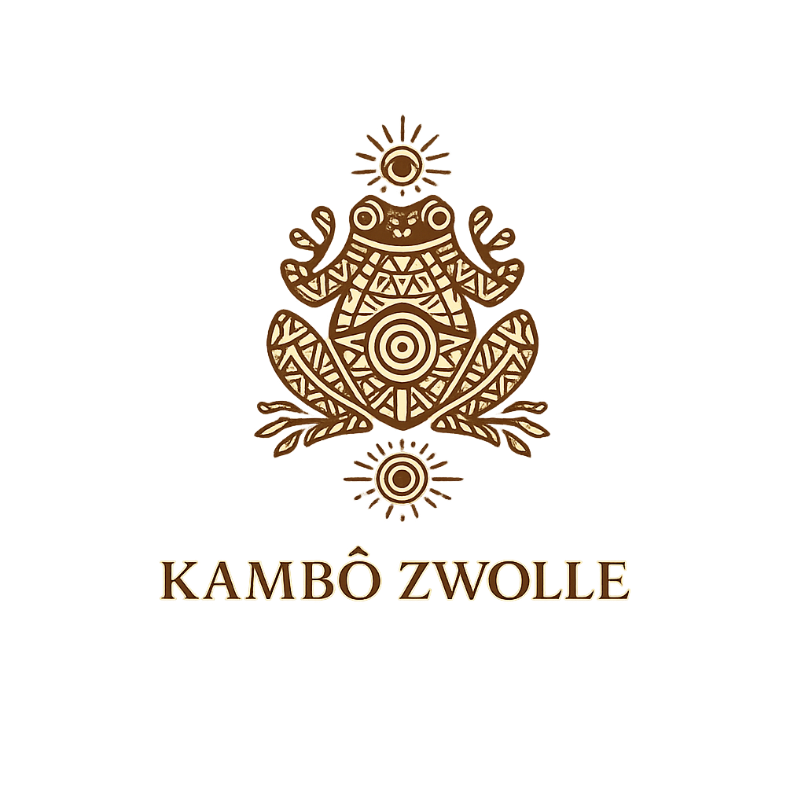
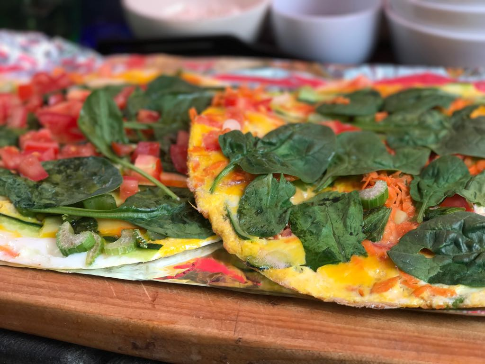
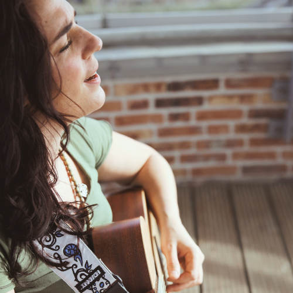
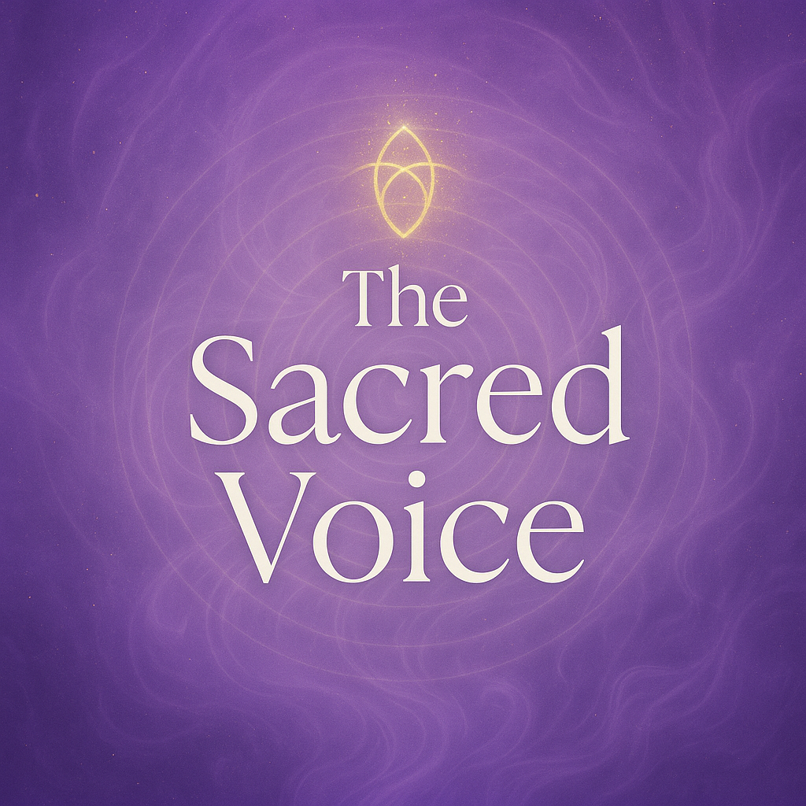
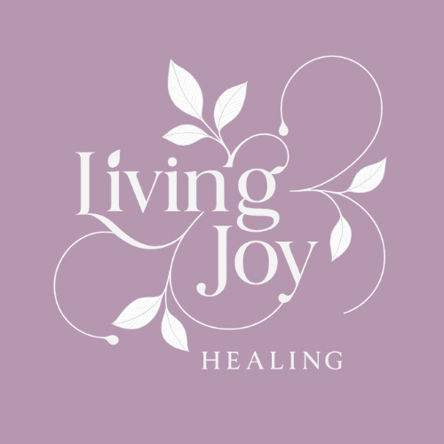
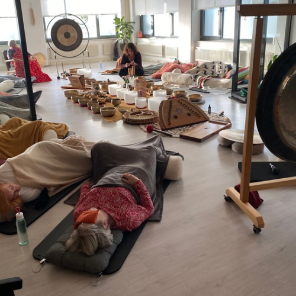
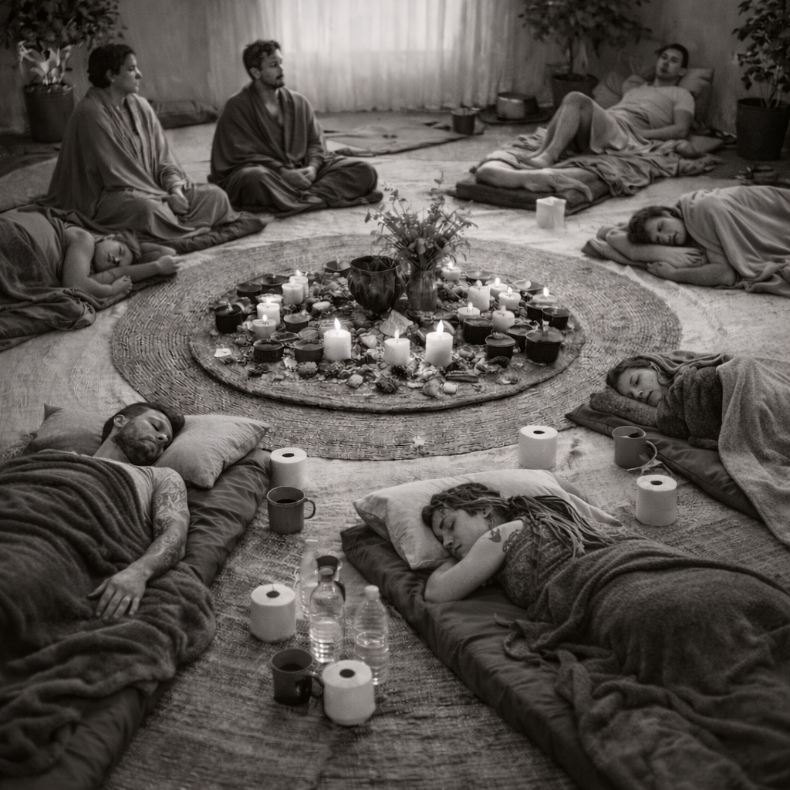
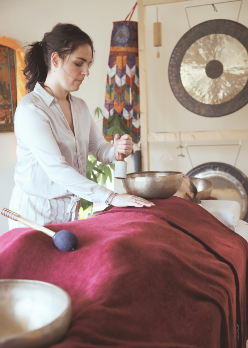

Galerij
Hieronder staan negen afbeeldingen in een responsive grid, met maximaal drie afbeeldingen per rij.
Klik op de afbeelding en je leest meer over de foto.

Kambo Zwolle

Gezonde voeding

Sound healing

Trainingen

Living Joy

Klankconcert
Creatief webdesign project.

Ceremonie

Persoonlijke begeleiding en consult.